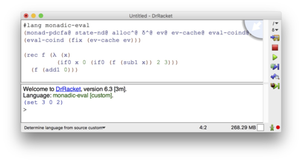

Abstracting Definitional Interpreters Functional Pearl
In this paper, we show that a definitional interpreter written in monadic style can express not only the usual notion of interpretation, but also a wide variety of collecting semantics, abstract interpretations, symbolic execution, and their intermixings. We give a rational reconstruction of a definitional abstract interpreter for a higher-order language by building a series of components implementing monadic operations. The denouement of our story is a computable abstract interpreter that arises from the composition of simple, independent components. Remarkably, this interpreter implements a form of pushdown control flow analysis (PDCFA) in which calls and returns are always properly matched in the abstract semantics. True to the definitional style of Reynolds, the evaluator involves no explicit mechanics to achieve this property; it is simply inherited from the defining language.
definitional interpreters, abstract interpretation, pushdown control flow analysis, symbolic execution
1 Introduction
In his landmark paper, Definitional interpreters for higher-order languages [16], Reynolds first observed that when a language is defined by way of an interpreter, it is possible for the defined language to inherit semantic characteristics of the defining language of the interpreter. For example, it is easy to write a compositional evaluator that defines a call-by-value language if the defining language is call-by-value, but defines a call-by-name language if the defining language is call-by-name.
In this paper, we make the following two observations:
Definitional interpreters, written in monadic style, can simultaneously define a language’s semantics as well as safe approximations of those semantics.
These definitional abstract interpreters can inherit characteristics of the defining language. In particular, we show that the abstract interpreter inherits the call and return matching property of the defining language and therefore realizes an abstract intpretation in the pushown style of analyses [3, 24].
A common problem of past approaches to the control flow analysis of functional languages is the inability to properly match a function call with its return in the abstract semantics, leading to infeasible program (abstract) executions in which a call is made from one point in the program, but control returns to another. The CFA2 analysis of Vardoulakis and Shivers [25] was the first approach that overcame this shortcoming. In essence, this kind of analysis can be viewed as replacing the traditional finite automata abstractions of programs with pushdown automata [3].
In this paper we investigate the use of definitional interpreters as
the basis for abstract interpretation of higher-order languages. We
show that a definitional interpreter—
2 From Machines to Compositional Evaluators
In recent years, there has been considerable effort in the systematic
construction of abstract interpreters for higher-order languages using
abstract machines—
allocating continuations in the store
allocated variable bindings in the store
using a store that maps addresses to sets of values
interpreting store updates as a join
interpreting store dereference as a non-deterministic choice
These transformations are semantics-preserving as the original and derived machines operate in a lock-step correspondence. But the real value of the derived semantics stems from the fact that it’s possible to turn the derived machine into an abstract interpreter with two simple steps:
bounding store allocation to a finite set of addresses
widening base values to some abstract domain
Moreover, the soundness of the resulting abstraction is self-evident and easily proved.
The AAM approach has been applied to a wide variety of languages and applications, and given the success of the AAM approach, it’s natural to wonder what is essential about the low-level machine basis of the semantics and whether a similar approach is possible with a higher-level formulation of the semantics such as a compositional evaluation function.
This paper shows that the essence of the AAM approach can be put on a high-level semantic basis. We show that compositional evaluators, written in monadic style can express similar abstractions to that of AAM. Moreover, we show that the high-level semantics offers a number of benefits not available to the machine model.
First, as we will see, the definitional interpreter approach is not formulated as a transformation on the semantics itself, but rather uses alternative notions of a monad to express the “abstracting” transformations. This means the concrete and abstract interpreters for a language can share large parts of their implementation; there is just one interpreter with a multiplicity of interpretations.}
Second, there is a rich body of work and many tools and techniques for constructing extensible interpreters, all of which applies to high-level semantics, not machines. By putting abstract interpretation for higher-order languages on a high-level semantic basis, we can bring these results to bear on the construction of extensible abstract interpreters. In particular, we use monad transformers to build re-usable components for mixing and matching the constiuent parts of an abstract interpreter.
Finally, using definitional interpreters for abstract interpretation satisfies an intellectual itch that asks whether it can be done at all. In solving this technical challenge, we discover a pleasant surprise about the definitional interpreter approach: it is inherently “pushdown.” Under the interpreter approach, the property follows for free as a gift from the metalanguage.
3 A Definitional Interpreter
We begin by first constructing a definitional interpreter for a small but representative higher-order, functional language. As our defining language, we use an applicative subset of Racket, a dialect of Scheme.This choice is largely immaterial: any functional language would do.
The abstract syntax of the language is defined in figure 1; it includes variables, numbers, unary and binary operations on numbers, conditionals, letrec expressions, functions, and applications.
E ::= (vbl X) ; Variable (num Number) ; Number (lam X E) ; Lambda (ifz E E E) ; Conditional (op1 O1 E) ; Unary primitive (op2 O2 E E) ; Binary primitive (app E E) ; Application (lrc X E E) ; Letrec X ::= Symbol ; Variable name O1 ::= add1 ... ; Unary operator O2 ::= + - ... ; Binary operator
ev@
(define ((ev ev) e) (match e [(num n) (return n)] [(vbl x) (do ρ ← ask-env (find (ρ x)))] [(ifz e₀ e₁ e₂) (do v ← (ev e₀) z? ← (zero? v) (ev (if z? e₁ e₂)))] [(op1 o e₀) (do v ← (ev e₀) (δ o v))] [(op2 o e₀ e₁) (do v₀ ← (ev e₀) v₁ ← (ev e₁) (δ o v₀ v₁))] [(lrc f e₀ e₁) (do ρ ← ask-env a ← (alloc f) ρ′ ≔ (ρ f a) (ext a (cons e₀ ρ′)) (local-env ρ′ (ev e₁)))] [(lam x e₀) (do ρ ← ask-env (return (cons (lam x e₀) ρ)))] [(app e₀ e₁) (do (cons (lam x e₂) ρ) ← (ev e₀) v₁ ← (ev e₁) a ← (alloc x) (ext a v₁) (local-env (ρ x a) (ev e₂)))]))
it is compositionally defined by structural recursion on the syntax of expressions,
it represents functions with a closure data structure that pairs together the code with the environment in which a function definition was evaluated,
it is structured monadically and uses monad operations to interact with the environment and store,
it relies on a helper function δ to interpret primitive operations.
(do x ← e . r) ≡ (bind e (λ (x) (do . r))) (do x ≔ e . r) ≡ (let ((x e)) (do . r)) (do e . r) ≡ (bind e (λ (_) (do . r))) (do b) ≡ b
Finally, there are two unconvential aspects worth noting. First, the interpreter is written in an open recursive style; the evaluator does not call itself recursively, instead it takes as an argument a function ev which it calls in order to recur. (We have employed a bit of cuteness by naming the first parameter ev, thereby shadowing the outer ev and making subsequent calls look like recursive calls.) This is a standard encoding for recursive functions in a setting without recursive binding. It is up to an external function, such as the Y-combinator, to close the recursive loop. As we will see, this open recursive form will be crucial for interposition to collect information about the intensional properties of evaluation.
providing the underlying monad of the interpreter: return and bind,
providing an interpretation of primitives: δ and zero?,
providing environment operations: ask-env for retreiving the environment and local-env for installing an environment,
providing store operations: ext for updating the store, and find for dereferencing locations, and
a remaining operation for allocating store locations, used to bind variables.
Going forward, we make frequent use of sets of definitions involving free variables, so we call such a collection a component. We assume components can be named (in this case, we’ve named the component ev@, indicated by the box in the upper-right corner) and linked together to eliminate free variables.We use Racket units [5] to model components in our implementation.
monad@
(define-monad (ReaderT (FailT (StateT ID)))) δ@
(define (δ . ovs) (match ovs [(list 'add1 n) (return (add1 n))] [(list 'sub1 n) (return (sub1 n))] [(list '- n) (return (- n))] [(list '+ n₀ n₁) (return (+ n₀ n₁))] [(list '- n₀ n₁) (return (- n₀ n₁))] [(list '* n₀ n₁) (return (* n₀ n₁))] [(list 'quotient n₀ n₁) (if (= 0 n₁) fail (return (quotient n₀ n₁)))])) (define (zero? v) (return (= 0 v))) store@
(define (find a) (do σ ← get-store (return (σ a)))) (define (ext a v) (update-store (λ (σ) (σ a v)))) alloc@
(define (alloc x) (do σ ← get-store (return (size σ))))
Let us now examine a set of components for completing the definitional interpreter. figure 3 gives the definition for a series of components that complete the interpreter. The first and most magical component is monad@, which uses our define-monad macro to generate a set of bindings based on a monad transformer stack. For this interpreter, we use a failure monad to model divide-by-zero errors, a state monad to model the store, and a reader monad to model the environment. The define-monad form generates bindings for return, bind, ask-env, local-env, get-store and update-store.
(define (mrun m) (run-StateT ∅ (run-ReaderT ∅ m)))
While the define-monad form is hiding some details, this component could have equivalently been written out explicitly. For example, return and bind can be defined as:
(define (((return a) r) s) (cons a s)) (define (((bind ma f) r) s) (match ((ma r) s) [(cons a s′) (((f a) r) s′)] ['failure 'failure]))
The δ@ component defines the interpretation of primitives, which is given in terms of the underlying monad. Finally the alloc@ component provides a definition of alloc, which fetches the store and uses its size to return a fresh address.
The store@ component defines the derived operations on stores of find and ext for finding and extending the store in terms of the monadic operations.
(define ((fix f) x) ((f (fix f)) x))
(define (eval e) (mrun ((fix ev) e)))
> (λ (x) x) '(((λ (x) x) . ()) . ())
> ((λ (x) (λ (y) x)) 4) '(((λ (y) x) . ((x . 0))) . ((0 . 4)))
> (* (+ 3 4) 9) '(63 . ())
> (quotient 5 (- 3 3)) '(failure . ())
(define-monad (ReaderT (StateT (FailT ID))))
> (quotient 5 (- 3 3)) 'failure
At this point, we’ve defined a fairly run of the mill definitional interpreter. Despite these pedestrian beginnings, we essentially have the complete skeleton for everything to come. In particular, we will reuse ev@ in all of the remaining interpreters. Now let’s do something a bit more enchanting.
3.1 Collecting Variations
(define (eval e) (mrun ((fix (ev-tell ev)) e)))
trace-monad@
(define-monad (ReaderT (FailT (StateT (WriterT List ID))))) ev-tell@
(define (((ev-tell ev₀) ev) e) (do ρ ← ask-env σ ← get-store (tell (list e ρ σ)) ((ev₀ ev) e)))
> (* (+ 3 4) 9)
'((63 . ())
((* (+ 3 4) 9) () ())
((+ 3 4) () ())
(3 () ())
(4 () ())
(9 () ()))
> ((λ (x) (λ (y) x)) 4)
'((((λ (y) x) . ((x . 0))) . ((0 . 4)))
(((λ (x) (λ (y) x)) 4) () ())
((λ (x) (λ (y) x)) () ())
(4 () ())
((λ (y) x) ((x . 0)) ((0 . 4))))
Were we to swap List with Set in the monad stack, we would obtain a reachable state semantics, another common form of collecting semantics, that loses the order and repetition of states.
As another collecting semantics variant, we can also consider collecting the dead code in a program. Here we use a monad stack that has an addition state component (with operations named put-dead and get-dead), which will the set of dead expressions. Initially, this will contain all of the subexpressions of the program. As the interpreter recurs through expressions, it will remove them from the dead set.
Figure 5 defines the monad stack for the dead code collecting semantics and the ev-dead@ component which interposes itself on an ev function to remove the given subexpression before recurring. Since computing the dead code requires an outer wrapper that sets the initial set of dead code to be all of the subexpressions in the program, it requires a eval-dead@ component which consumes a closed evaluator, i.e. something of the form (fix ev).
(define (eval e) (mrun ((eval-dead (fix (ev-dead ev))) e)))
> (if0 0 1 2) (cons '(1 . ()) (set 2))
> (* (+ 3 4) 9) (cons '(63 . ()) (set))
> (λ (x) x) (cons '(((λ (x) x) . ()) . ()) (set 'x))
> (if0 (quotient 1 0) 2 3) (cons '(failure . ()) (set 3 2))
dead-monad@
(define-monad (ReaderT (StateT (StateT (FailT ID))))) ev-dead@
(define (((ev-dead ev₀) ev) e) (do θ ← get-dead (put-dead (set-remove θ e)) ((ev₀ ev) e))) eval-dead@
(define ((eval-dead eval) e₀) (do (put-dead (subexps e₀)) (eval e₀)))
So our setup makes it easy not only to express the run of the mill interpreter, but also different forms of collecting semantics. Let us now start to look at abstractions.
3.2 Abstracting Base Values
One of the things an abstract interpreter must do in order to become decidable is to have some form of abstraction for the base types of the language. A very simple approach is to use a finite-element abstract domain. We can do this for our sole base type of numbers by introducing a new kind of number, written 'N, which is an abstract value that stands for all numbers. Abstract values will be introduced by alternative interpretation of the primitive operations, given in figure 6, which simply produces 'N in all cases. Some care must be taken in the interpretation of 'quotient since if the denominator is an abstract value, the result must include a failure since 0 is in the set of values abstracted by 'N. This means that dividing a number by an abstract value must produce two answers: 'N and 'failure. This is done by adding non-determinism to the monad stack,
(ReaderT (FailT (StateT (NondetT ID))))
δ^@
(define (δ . ovs) (match ovs [(list 'add1 n) (return 'N)] [(list 'sub1 n) (return 'N)] [(list '+ n₀ n₁) (return 'N)] [(list '- n₀ n₁) (return 'N)] [(list '* n₀ n₁) (return 'N)] [(list 'quotient n₀ (? number? n₁)) (if (= 0 n1) fail (return 'N))] [(list 'quotient n₀ n₁) (mplus (return 'N) fail)])) (define (zero? v) (match v ['N (mplus (return #t) (return #f))] [_ (return (= 0 v))]))
> (* (+ 3 4) 9) '((N . ()))
> (quotient 5 (add1 2)) '((failure . ()) (N . ()))
> (if0 (add1 0) 3 4) '((3 . ()) (4 . ()))
(ReaderT (FailT (StateT (WriterT List (NondetT ID)))))
> (if0 (add1 0) 3 4)
(set
'((3 . ())
((if0 (add1 0) 3 4) () ())
((add1 0) () ())
(0 () ())
(3 () ()))
'((4 . ())
((if0 (add1 0) 3 4) () ())
((add1 0) () ())
(0 () ())
(4 () ())))
It should be clear that the interepreter will only ever see a finite set of numbers (including 'N), but it’s definitly not true that the interpreter halts on all inputs. Firstly, it’s still possible to generate an infinite number of closures. Secondly, there’s no way for the interpreter to detect when it sees a loop. To make a terminating abstract interpreter requires tackling both. Let’s look next at abstracting closures.
4 Abstracting Closures
Closures consist of code—
Any abstraction of the allocation function that produces a finite set will do, but the choice of abstraction will determine the precision of the resulting analysis. A simple choice is to allocate variable bindings by using a variable’s name as its address. This gives a monomorphic, or 0CFA-like, abstraction.
Figure 7 shows an alternative component for finite allocation that uses variables names as the notion of addresses and a component for the derived operations find and ext when the store uses a set as its range. The for/monad+ form is just a convenience for combining a set of computations with mplus; in other words, find returns all of the values in the store at a given address. The ext function joins whenever an address is already allocated, otherwise it maps the address to a singleton set.
alloc^@
(define (alloc x) (return x)) store-nd@
(define (find a) (do σ ← get-store (for/monad+ ([v (σ a)]) (return v)))) (define (ext a v) (update-store (λ (σ) (σ a (if (∈ a σ) (set-add (σ a) v) (set v))))))
> (let f (λ (x) x) (let _ (f 0) (f 1)))
'((1 . ((x 1 0) (f ((λ (x) x) . ()))))
(0 . ((x 1 0) (f ((λ (x) x) . ())))))
We’ve now taken care of making a sound, finite abstraction of the space of all closures that arise during evaluation. It would seem we are very close to having a sound, total abstract interpretation function.
5 Detecting Cycles with a Cache
At this point, it’s worth observing that the interpreter obtained by linking together δ^@ and alloc^@ components will only ever visit a finite number of states for a given program. The state consists of an expression, environment, and store mapping addresses to sets of values. To see that this is a finite set is pretty straightforward: expressions (in the given program) are finite, environments are maps from variables (again, finite in a program) to address. The addresses are finite thanks to alloc^, so environments are finite. The store maps addresses (finite by alloc^) to sets of values. The values are base values, which are finite by δ^, or closures which consist of expressions (in the given program) and an environment, which we just seen are finite. Since the elements of the sets are finite, the sets themselves are finite, and therefore stores, and finally states, are all finite sets.
The problem is that while the interpreter only ever see a finite set of inputs, it doesn’t know it. So even a simple loop will cause the interpreter to diverge:
> (rec f (λ (x) (f x)) (f 0)) with-limit: out of time
To solve this problem, let’s introduce a notion of a cache which is a mapping from states to sets of value, store pairs. The basic idea is that we will use the cache to do a form of co-inductive programming. While evaluating a state ς for the first time, we may at some point be asked to evaluate exactly ς again. Should this happen, we can return the empty set of results. We will use the cache to track the encountered states and the results they produce. By maintaining the cache, we avoid the possibility of diverging.
ev-cache′@
(define (((ev-cache ev₀) ev) e) (do ρ ← ask-env σ ← get-store ς ≔ (list e ρ σ) Σ ← get-$ (if (∈ ς Σ) (for/monad+ ([v×σ (Σ ς)]) (do (put-store (cdr v×σ)) (return (car v×σ)))) (do (put-$ (Σ ς ∅)) v ← ((ev₀ ev) e) (update-$ (λ (Σ) (Σ ς (set-add (Σ ς) (cons v σ))))) (return v)))))
(ReaderT (FailT (StateT (NondetT (StateT+ ID)))))
The StateT+ monad transformer provides operations get-$ and update-$ for getting and updating the cache, respectively. It joins its finite maps by union of the range when mplus is called, because it cannot defer to an underlying monoid as the outer StateT does with NondetT.
Check if the current state is in the cache. If it’s in the cache, return all the results given in the cache. If it’s not, set the cache for the current state to the empty set, evaluate the expression, add the resulting value to the cache for the state, and return the result.
(define (eval e) (mrun ((fix (ev-cache ev)) e)))
If we were to link this together with alloc@ and δ@, we’d obtain a concrete interpreter that either 1) produces the empty set because it encountered a loop, 2) produces a singleton result, or 3) diverges because it encounters an infinite set of states. But if we were to link this together with alloc^@ and δ^@, we’d obtain an abstract interpreter that is total: it terminates on all inputs.
To see why this, observe that for a given program there only a finite set of possible caches. We have already seen that there are a finite set of states and values, so it follows that there are only a finite set of maps from states to sets of values. Now notice that on each recursive call, either the state is in the cache and it returns immediately, or the cache grows. So programs simply cannot run forever because that would imply the cache would grow forever.
It should be easy to see that if evaluating a state ς requires recursively evaluating that same state, it will now produce the empty set since the cache will be updated to map ς to ∅ before proceeding to the sub-expressions.
> (rec f (λ (x) (f x)) (f 0)) '()
> (rec fact (λ (n) (if0 n 1 (* n (fact (sub1 n))))) (fact 5)) '(N)
It may seem we’ve accomplished our goal of making a sound and decidable abstract interpreter. However this approach is broken in general: it is not sound in the presence of abstraction. The problem here is that when the interpreter reaches “the same” state it has seen before, what we mean by “the same” in the presence of abstraction is subtle. For example, imagine evaluating a function application of some function f to an abstract value 'N. Suppose in evaluating this application we encounter another application of f to 'N. Is it the same application? Well, yes and no. It is the same abstract state, however the abstract state stands for a set of concrete states; in this case, the application of f to all numbers. So there are states stood for in the abstraction that are equal and not equal. In other words, in the presence of abstraction, when a loop is detected, there may be a loop in the concrete interpretation. Our naive loop detection set-up however is assuming there must be a loop.
We can demonstrate the problem with a simple counter-example to soundness:
> (rec f (λ (x) (if0 x 0 (if0 (f (sub1 x)) 2 3))) (f (add1 0))) '(0)
Concretely, this program returns 2, however with the combination of loop detection and abstraction, the abstract interpreter determines that this program produces 0, which is clearly unsound.
6 Fixing the Cache
The basic problem with the caching solution of Detecting Cycles with a Cache is that it cuts short the exploration of the program’s behavior. In the soundness counter-example, the inner call to f is present in the cache so neither branch of the conditional is taken; it is at this point of bottoming out that we determine f may return 0. Of course, now we know that the conditional should have take the true branch since 0 could be returned, but it’s too late: the program has terminated.
To restore soundness, what we need to do is somehow iterate the interpreter so that we can re-explore the behavior knowing that f may produce 0. A first thought may be to do a complete evaluation of the program, take the resulting cache, and then feed that in as the initial cache for a re-evaluation of the program. But there’s an obvious problem... doing so would result in a cache hit and the saved results would be returned immediately without exploring any new behavior.
(ReaderT (FailT (StateT (NondetT (ReaderT ; the prior cache (StateT+ ID))))))
The revised ev-cache@ component is given in figure 9, which uses the ask-⊥ operation to retreive the prior cache. If the prior cache is empty, this code degenerates into exactly what was given in figure 8.
ev-cache@
(define (((ev-cache ev₀) ev) e) (do ρ ← ask-env σ ← get-store ς ≔ (list e ρ σ) Σ ← get-$ (if (∈ ς Σ) (for/monad+ ([v×σ (Σ ς)]) (do (put-store (cdr v×σ)) (return (car v×σ)))) (do Σ⊥ ← ask-⊥ ; initialize to prior, if exists (put-$ (Σ ς (if (∈ ς Σ⊥) (Σ⊥ ς) ∅))) v ← ((ev₀ ev) e) (update-$ (λ (Σ) (Σ ς (set-add (Σ ς) (cons v σ))))) (return v)))))
We are left with two remaining problems; we need to figure out: 1) how to pipe the cache from one run of the interpreter into the next and 2) when to stop. The answer to both is given in figure 10.
The fix-cache function takes a closed evaluator, just like eval-dead from Collecting Variations, i.e. something of the form (fix ev). It iteratively runs the evaluator. Each run of the evaluator resets the “local” cache to empty and uses the cache of the previous run as it’s fallback cache (initially it’s empty). The computation stops when a least fixed-point in the cache has been reached, that is, when running the evaluator with a prior gives no changes in the resulting cache. At that point, the result is returned.
fix-cache@
(define ((fix-cache eval) e) (do ρ ← ask-env σ ← get-store ς ≔ (list e ρ σ) (mlfp (λ (Σ) (do (put-$ ∅-map) (put-store σ) (local-⊥ Σ (eval e)) get-$))) Σ ← get-$ (for/monad+ ([v×σ (Σ ς)]) (do (put-store (cdr v×σ)) (return (car v×σ)))))) (define (mlfp f) (let loop ([x ∅-map]) (do x′ ← (f x) (if (equal? x′ x) (return (void)) (loop x′)))))
(define (eval e) (mrun ((fix-cache (fix (ev-cache ev))) e)))
We have thus achieved our goal and can confirm it gives the expected answers on the previous examples:
> (rec f (λ (x) (f x)) (f 0)) '()
> (rec fact (λ (n) (if0 n 1 (* n (fact (sub1 n))))) (fact 5)) '(N)
> (rec f (λ (x) (if0 x 0 (if0 (f (sub1 x)) 2 3))) (f (add1 0))) '(0 2 3)
7 Pushdown à la Reynolds
By combining the finite abstraction of base values and closures with the termination-guaranteeing cache-based fixed-point algorithm, we have obtained a terminating abstract interpreter. But what kind of abstract interpretation are we really doing?
We have followed the basic recipe of AAM, but adapted to a compositional evaluator instead of an abstract machine. However we did manage to skip over one of the key steps in the AAM method: we never store-allocated continuations.
In fact, there are no continuations at all!
The abstract machine formulation of the semantics models the object-level stack explicitly as an inductively defined data structure. Because stacks may be arbitrarily large, they must be finitized like base values and closures. Like closures, the AAM trick is to thread them through the store and then finitize the store. But in the definitional interpreter approach, the stack is implicit and inherited from the meta-language.
But here is the remarkable thing: since the stack is inherited from the meta-language, the abstract interpreter inherits the “call-return matching” of the meta-language, which is just to say there is no loss of precision of in the analysis of the control stack. This is a property that usually comes at considerable effort and engineering in the formulations of higher-order flow analysis that model the stack explicitly. So-called higher-order “pushdown” analysis has been the subject of multiple publications and a dissertation [3, 4, 7, 9, 10, 23, 24, 25]. Yet when formulated in the definitional interpreter style, the pushdown property requires no mechanics and is simply inherited from the meta-language.
Reynolds, in his celebrated paper Definitional interpreters for higher-order languages [16], first observed that when the semantics of a programming language is presented as a definitional interpreter, the defined language could inherit semantic properties of the defining language. We have now shown this observation can be extended to abstract interpretation as well, namely in the important case of the pushdown property.
In the remainder of this paper, we harvest some of the fruits of our labor by exploring a few natural extensions and variations on the basic pushdown abstract interpreter we have established at this point.
8 Widening the Store
The abstract interpreter we’ve constructed so far uses a store-per-program-state abstraction, which while precise can be unwieldy in terms of cost. A common technique to combat this cost is to use a global “widenened” store, which can be thought of as a single store that is the join of all the individual stores in the current set-up. Thanks to our monad transformer framework, expressing this change boils down to a simple re-ordering of the monad stack.
(ReaderT (FailT (StateT (NondetT (ReaderT (StateT+ ID))))))
(ReaderT (FailT (NondetT (StateT+ (ReaderT (StateT+ ID))))))
> (let x (add1 0) (let y (if0 x 1 2) (let z (if0 x 3 4) (if0 x y z))))
'((2 . ((x N) (y 2) (z 3)))
(3 . ((x N) (y 2) (z 3)))
(2 . ((x N) (y 2) (z 4)))
(3 . ((x N) (y 1) (z 3)))
(1 . ((x N) (y 1) (z 4)))
(1 . ((x N) (y 1) (z 3)))
(4 . ((x N) (y 2) (z 4)))
(4 . ((x N) (y 1) (z 4))))
> (let x (add1 0) (let y (if0 x 1 2) (let z (if0 x 3 4) (if0 x y z)))) '((1 3 2 4) . ((x N) (y 1 2) (z 3 4)))
9 An Alternative Abstraction
precise-δ@
(define (δ . ovs) (match ovs [`(add1 ,(? number? n)) (return (add1 n))] [`(sub1 ,(? number? n)) (return (sub1 n))] [`(- ,(? number? n)) (return (- n))] [`(+ ,(? number? n₁) ,(? number? n₂)) (return (+ n₁ n₂))] [`(- ,(? number? n₁) ,(? number? n₂)) (return (- n₁ n₂))] [`(* ,(? number? n₁) ,(? number? n₂)) (return (* n₁ n₂))] [`(quotient ,(? number? n₁) ,(? number? n₂)) (if (= 0 n₂) fail (return (quotient n₁ n₂)))] [`(add1 ,_) (return 'N)] [`(sub1 ,_) (return 'N)] [`(+ ,_ ,_) (return 'N)] [`(- ,_ ,_) (return 'N)] [`(* ,_ ,_) (return 'N)] [`(quotient ,_ ,(? number? n₂)) (if (= 0 n₂) fail (return 'N))] [`(quotient ,_ ,_) (mplus (return 'N) fail)])) (define (zero? v) (match v ['N (mplus (return #t) (return #f))] [_ (return (zero? v))])) store-crush@
(define (find a) (do σ ← get-store (for/monad+ ([v (σ a)]) (return v)))) (define (number*? n) (or (eq? 'N n) (number? n))) (define (crush v vs) (if (number*? v) (set-add (for/set ([v* vs] #:when (not (number*? v*))) v*) 'N) (set-add vs v))) (define (ext a v) (update-store (λ (σ) (if (∈ a σ) (σ a (crush v (σ a))) (σ a (set v)))))) Figure 11: An alternative abstraction for precise primitives
In this section, we demonstrate how easy it is to experiment with alternative abstraction strategies by swapping out components. In particular we look at an alternative abstraction of the interpretation of primitive operations and store joins.
Figure 11 defines two new components: precise-δ@ and store-crush@. The first is yet another interpretation of the primitive operations. The distinguishing feature of this varaint of δ is that it is precision preserving. Unlike δ^@, it does not introduce abstraction, it merely propagates it. So if you add two concrete numbers together, you will get a concrete number. But if you add a concrete and abstract number, you will get an abstract number.
This interpretation of primitive operations clearly doesn’t impose a finite abstraction on it’s own. And if used in concert with the store-nd@ implementation of the store, termination is not guaranteed.
> (* (+ 3 4) 9) '(63)
> ((λ (x) (* x x)) 5) '(25)
> (let f (λ (x) x) (* (f 5) (f 5))) '(N)
If this sets off worries about non-termination, try to construct a program that computes an infinite set of numbers with a finite number of variable bindings over the life of the program. Hint: you won’t be able to. (This last example suggests an easy refinement to the store-crush@ strategy: only widen when different base values are written to a shared location. We leave this as an easy exercise for the reader.)
Here we see one of the strengths of our approach. This strategy appears quite natural, and to the best of our knowledge, is novel. It’s hard to imagine how it could be formulated as, say, a constraint-based flow analysis.
10 Symbolic Execution and Path-Sensitive Verification
As a final exercise in abstract interpretation component engineering, we develop a monadic view of symbolic execution.
We present an extension to the monad stack and metafunctions that gives rise to a symbolic executor [11], then show how abstractions discussed in previous sections can be applied to enforce termination, turning a traditional symbolic execution into a path-sensitive verification engine.
10.1 Symbolic Execution
Figure 12 shows the units needed to turn the existing interpreter into a symbolic executor, in addition to adding symbolic numbers (sym X) to the language syntax. Primitives such as 'quotient now may also take as input and return symbolic values. As standard, symbolic execution employs a path-condition accumulating assumptions made at each branch, allowing the elimination of infeasible paths and construction of test cases. We represent the path-condition φ as a set of symbolic values known to have evaluated to 0. This set is another state component provided by StateT. Monadic operations get-path-cond and refine reference and update the path-condition. Metafunction zero? works similarly to the concrete counterpart, but also uses the path-condition to prove that some symbolic numbers are definitely 0 or non-0. In case of uncertainty, zero? returns both answers besides refining the path-condition with the assumption made. Operator '¬ represents negation in our language.
> (if0 'x (if0 'x 2 3) (quotient 5 'x))
(set
(cons '(quotient 5 x) (set '(¬ x)))
(cons 2 (set 'x)))
A scaled up symbolic executor can have zero? calling out to an SMT solver for interesting arithmetics, and extend the language with symbolic functions and blame semantics for sound higher-order symbolic execution [15, 21].
E ::= ... (sym X) ; Symbolic number symbolic-monad@
(define-monad (ReaderT (FailT (StateT (StateT (NondetT ID)))))) ev-symbolic@
(define (((ev-symbolic ev₀) ev) e) (match e [(sym x) (return x)] [e ((ev₀ ev) e)])) δ-symbolic@
(define (δ . ovs) (match ovs ... [(list 'quotient v₀ v₁) (do z? ← (zero? v₁) (cond [z? fail] [(and (number? v₀) (number? v₁)) (return (quotient v₀ v₁))] [else (return `(quotient ,v₀ ,v₁))]))] [(list '¬ 0) 1] ...)) (define (zero? v) (do φ ← get-path-cond (match v [(? number? n) (return (= 0 n))] [v #:when (∈ v φ) (return #t)] [v #:when (∈ `(¬ ,v) φ) (return #f)] [`(¬ ,v′) (do a ← (zero? v′) (return (not a)))] [v (mplus (do (refine v) (return #t)) (do (refine `(¬ ,v)) (return #f)))])))
10.2 From Symbolic Execution to Verification
Traditional symbolic executors mainly aim to find bugs and provide no termination guarantee. We can apply abstracting units presented in previous sections, namely base value widening (Abstracting Base Values), finite allocation (Abstracting Closures), caching and fixing (Detecting Cycles with a Cache and Fixing the Cache) to turn a symbolic execution into a sound, path-sensitive program verification.
Operations on symbolic values introduce a new source of infinite configurations by building up new symbolic values. We therefore straightforwardly widen a symbolic value to the abstract number 'N when it shares an address with a different number. Figure 13 shows extension to δ and zero? in the presence of 'N. The different treatments of 'N and symbolic values clarifies that abstract values are not symbolic values: the former stands for a set of multiple values, whereas the latter stands for an single unknown value. Tests on abstract number 'N do not strengthen the path-condition. It is unsound to accumulate any assumption about 'N.
δ-symbolic@
(define (δ . ovs) (match ovs ... [(list 'quotient v₀ v₁) (do z? ← (zero? v₁) (cond [z? fail] [else (match (list v₀ v₁) [(list (? number? n₀) (? number? n₁)) (return (quotient n₀ n₁))] [(list _ ... 'N _ ...) (return 'N)] [(list v₀ v₁) (return `(quotient ,v₀ ,v₁))])]))] ...)) (define (zero? v) (do φ ← get-path-cond (match v ['N (mplus (return #t) (return #f))] ...)))
11 Try It Out
All of the components discussed in this paper have been implemented as units [5] in Racket [6]. We have also implemented a #lang language so that composing and experimenting with these interpreters is easy. Assuming Racket is installed, you can install the monadic-eval package with (URL redacted for double-blind):
raco pkg install \
https://github.com/plum-umd/monadic-eval.git
A #lang monadic-eval program starts with a list of components, which are linked together, and an expression producing an evaluator. Subsequent forms are interpreted as expressions when run. Programs can be run from the command-line or interactively in the DrRacket IDE. For example, figure 14 shows a screen shot of the PDCFA evaluator running the example from Fixing the Cache.

12 Related Work
This work draws upon and re-presents many existing ideas from the literature on abstract interpretation for higher-order languages. In particular, it closely follows the abstracting abstract machine [22, 23] approach to deriving abstract interpreters from semantics for higher-order languages. The key difference here is that we have done it in the setting of a monadic definitional interpreter instead of an abstract machine. This involved a novel caching mechanism and fixed-point algorithm, but otherwise followed the same recipe. Remarkably, the pushdown property is simply inherited from the meta-language rather than require explicit mechanisms within the abstract interpreter.
The use of monads and monad transformers to make extensible (concrete) interpreters is a well-known idea [12, 14, 19], which we have extended to work for compositional abstract interpreters. The use of monads and monad transformers in machine based-formulatons of abstract interpreters has previously been explored by Sergey, et al. [18] and Darais et al. [2], respectively. Darais has also shown that certain monad transformers are also Galois transformers, i.e. they compose to form monads that are Galois connections. This idea may pave a path forward for having both componential code and proofs for abstract interpreters in the style presented here.
The caching mechanism used to ensure termination in our abstract interpreter is similar to that used by Johnson and Van Horn [10]. They use a local- and meta-memoization table in a machine-based interpreter to ensure termination for a pushdown abstract interpreter. This mechanism is in turn reminiscent of Glück’s use of memoization in an interpreter for two-way non-deterministic pushdown automata [8].
Vardoulakis, who was the first to develop the idea of a pushdown
abstraction for higher-order flow analysis [25],
formalized CFA2 using a CPS model, which is similar in spirit to a
machine-based model. However, in his dissertation [24] he
sketches an alternative presentation dubbed “Big CFA2” which is a
big-step operational semantics for doing pushdown analysis quite
similar in spirit to the approach presented here. One key difference
is that Big CFA2 fixes a particular coarse abstraction of base values
and closures—
Our formulation of a pushdown abstract interpreter computes an abstraction similar to the many existing variants of pushdown flow analysis [3, 4, 7, 9, 10, 23, 24, 25].
The mixing of symbolic execution and abstract intrepretation is similar in spirit to the logic flow analysis of Might [13], albeit in a pushdown setting and with a stronger notion of negation; generally, our presentation resembles traditional formulations of symbolic execution more closely. Our approach to symbolic execution only handles the first-order case of symbolic values, as is traditional. However, Nguyễn’s work on higher-order symbolic execution [15] demonstrates how to scale to behavioral symbolic values. In principle, it should be possible to handle this case in our approach by adapting Nguyễn’s method to a formulation in a compositional evaluator.
We have eschewed soundness proofs in this paper. This is done in part to emphasize the pearly intuitions and constructions of abstract definitional interpreters and in part because it is far less clear how to prove soundness when compared to the machine-based formulations. Part of the difficulty stems from the set-up to support extensibility. As mentioned previously, perhaps Galois transformers [2] can help with this aspect. But even if we fixed a particular set of components and monad transformer stack, we run up against the challenge of having to prove soundness in the presence of concrete computations which may not terminate. Handling this in the small-step setting is easy using a preservation argument, but it’s not clear how to do it with our approach. Rompf and Amin’s recent work on proving type soundness with definitional interpreters [17] appears revelant and perhaps paves a way forward.
Now that we have abstract interpreters formulated with a basis in abstract machines and with a basis in monadic interpreters, an obvious question is can we obtain a correspondence between them similar to the functional correspondence between their concrete counterparts [1]? An interesting direction for future work is to try to apply the usual tools of defunctionalization, CPS, and refocusing to see if we can interderive these abstract semantic artifacts.
13 Conclusions
We have shown that a definitional interpreter written in monadic style can express a wide variety of semantics, such as the usual concrete semantics, collecting semantics, abstract interpretations, symbolic execution, and several combinations thereof.
Remarkably, we observe that our abstract interpreter implements a form of pushdown abstraction in which calls and returns are always properly matched in the abstract semantics. True to the definitional style of Reynolds, the evaluator involves no explicit mechanics to achieve this property; it is simply inherited from the defining language.
We believe this formulation of higher-order abstract interpretation offers a promising new foundation for making re-usable components for the static analysis and verification of higher-order programs.
Acknowledgments We thank Sam Tobin-Hochstadt and Dionna Glaze for several fruitful conversations while developing the ideas in this work.